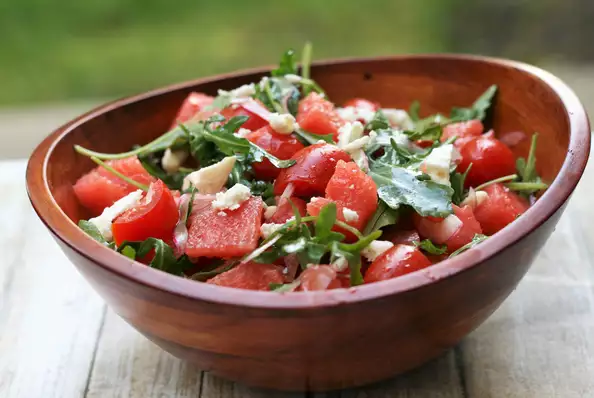

Watermelon Feta Salad

Description
This is a great arugula and tomato salad with chunks of watermelon and
feta cheese. Thanks to the watermelon, the kids will like it also!
Ingredients
- 3 tablespoons olive oil
- 2 teaspoons white balsamic vinegar
- ½ teaspoon kosher salt
- 8 ounces grape tomatoes, halved
- 3 cups arugula
- 1 cup sliced red onion
- 2 pounds watermelon, cubed
- 4 ounces feta cheese, cut into 1/4-inch cubes
Steps
-
Whisk olive oil, vinegar, and salt together in a large mixing bowl. Add
tomatoes, arugula, and red onion; toss to coat. Gently stir in
watermelon and feta cheese to serve.